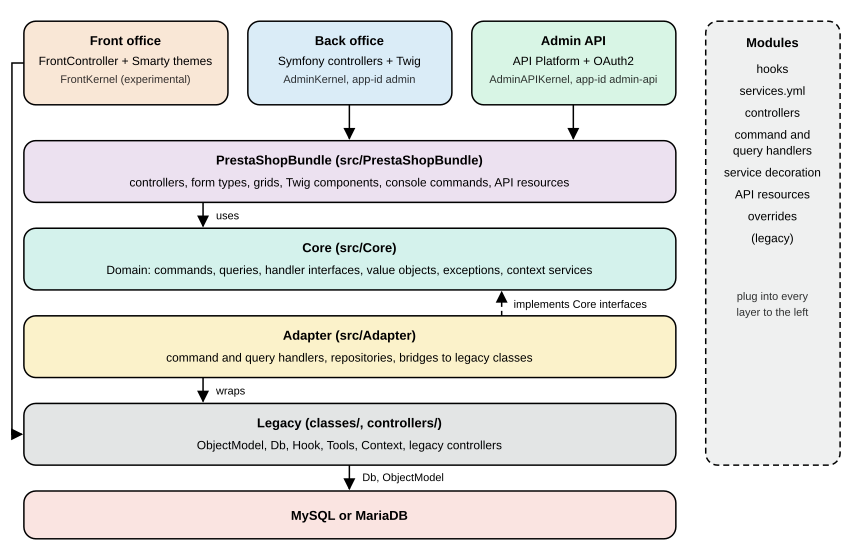

Architecture
|
This content was generated with the assistance of AI and should be verified against the official documentation before being relied on in production. |
PrestaShop is two applications living in one repository. One is the historical PHP application, with global classes in
classes/, ObjectModel active records, Db and Context singletons, Smarty templates and legacy controllers. The other
is a Symfony application that has been growing around it since 1.7 and now renders the whole back office layout, serves the
Admin API and holds the domain logic. Understanding which part answers which question, and how the two talk to each other,
is the difference between extending PrestaShop with the grain and fighting it. This page maps the layers, the three
kernels, the template engines, the context services and the feature flags of 9.2, with code that was run on a local
installation, and ends with guidance on where a module’s code belongs.
The page was written against PrestaShop 9.2.0 (released 2026-09-30, Symfony 6.4.46, Smarty 4.5.7, Twig 3.27.1, Doctrine ORM 2.20.0, PHP 8.5.12 in the official Docker image, Hummingbird 2.1.2) and checked on 2026-10-27. Every number, route, command output and class name below was read from a running 9.2.0 installation or from the 9.2.0 sources. The running example is Pocket Coffee: its "roast date badge" and its "order placed" log entry cross several of these layers, and the last sections show where each piece of that feature belongs.
Two applications in one repository
The front office and the legacy part of the back office are the older application: a request enters through a legacy
controller (FrontController or AdminController subclasses in controllers/ and classes/controller/), which reads and
writes data through ObjectModel classes in classes/, and renders a Smarty template. The newer application is a Symfony 6.4
project: the back office pages that were migrated to Symfony, the layout around every back-office page since 9.0, the console,
the Admin API and the domain layer are all Symfony code, written with controllers as services, forms, Twig and the
dependency injection container. The two share the database, the configuration and the modules, and the code between them is
the subject of the next sections.
The official architecture overview describes the same split as four subsystems of the core business stack: legacy code in
classes/ and controllers/, the Core in src/Core, the Adapter in src/Adapter and the Symfony bundle in
src/PrestaShopBundle. On the checked 9.2.0 installation the three namespaces under src/ hold 3,512 (Core), 1,018
(Adapter) and 1,034 (PrestaShopBundle) PHP files, classes/ holds 103 top-level classes and 97 of the files under it
extend ObjectModel, controllers/admin still holds 27 legacy admin controllers and controllers/front the front
controllers. The Symfony side is large and growing, but the legacy side is still what makes the shop run.

Read the figure from top to bottom for a request and from bottom to top for a dependency. The three entry points differ in the kernel that serves them, the Symfony bundle is the application layer, the Core describes what the shop can do, the Adapter implements the Core’s interfaces on top of the legacy classes, and the legacy layer talks to the database. The front office reaches the legacy controllers directly. Modules sit beside all of it: they attach to hooks, register services, add controllers and, as a last resort, override classes.
The four subsystems
| Subsystem | Location and namespace | Contents and rules | May use |
|---|---|---|---|
Legacy |
|
Global classes without namespaces: |
Everything |
Core |
|
The default home of new business code: the domain (commands, queries, value objects), interfaces, services without a framework dependency. Must not depend on legacy classes, legacy constants or PrestaShopBundle; should follow SOLID, depend on Adapter interfaces rather than classes and avoid depending directly on Symfony. |
Core |
Adapter |
|
The bridge: classes that wrap legacy code behind a Core interface (command and query handlers, repositories, validators,
the |
Core, Adapter, legacy |
PrestaShopBundle |
|
The Symfony application layer: controllers, form types, grids, Twig components and extensions, security, the translation system, API Platform integration and the console commands. Must not use legacy classes or constants. |
Core, Adapter |
The rules are written as MUST and SHOULD in the architecture documentation, and the code does not follow them
perfectly: on the checked installation 76 of the files under src/Core import a class of the Adapter namespace and 119
mention the PrestaShopBundle namespace (typically the module and shop repositories that the Core cannot yet replace). The
rules are the direction of travel and the rule of thumb for new code, not an invariant that tooling enforces.
The Adapter exists because most legacy classes are static, so they cannot be injected into Core classes. The pattern is to let the Core declare an interface, to implement it in the Adapter by calling the legacy class, and to inject the interface. When the legacy class is eventually replaced, only the Adapter changes. The command handlers of the CQRS page are the largest example, and the architecture documentation calls the whole arrangement a transition phase that is expected to last for the whole lifetime of PrestaShop 9.
The legacy stack, in code
The unit of the legacy stack is the ObjectModel: an active record whose static $definition array declares the table,
the primary key, the fields, their types and validators, and which fields are translated per language. The 9.2.0 Tax
class is a complete, small example.
<?php
class TaxCore extends ObjectModel
{
public $name;
public $rate;
public $active;
public $deleted = false;
public static $definition = [
'table' => 'tax',
'primary' => 'id_tax',
'multilang' => true,
'fields' => [
'rate' => ['type' => self::TYPE_FLOAT, 'validate' => 'isFloat', 'required' => true],
'active' => ['type' => self::TYPE_BOOL],
'deleted' => ['type' => self::TYPE_BOOL],
/* Lang fields */
'name' => ['type' => self::TYPE_STRING, 'lang' => true, 'validate' => 'isGenericName', 'required' => true, 'size' => 32],
],
];
}The ObjectModel base class turns that array into add(), update(), save() and delete() behaviour (the TYPE_*
constants are TYPE_INT 1, TYPE_BOOL 2, TYPE_STRING 3, TYPE_FLOAT 4, TYPE_DATE 5, TYPE_HTML 6, TYPE_NOTHING 7
and TYPE_SQL 8), validates the fields against the named Validate methods, writes the language table for the lang
fields and exposes the object to the legacy Webservice through its $webserviceParameters. Tax also shows a typical
legacy rule: deleting a tax that orders use only marks it as deleted (a soft delete that historizes the tax) so that old
invoices stay correct.
The class is declared as TaxCore and is used as Tax. A runtime autoloader (the prestashop/autoload package in
vendor/) generates the class Tax extends TaxCore on demand, with eval(), and that generated stub is the extension
point of the legacy override system: a file in override/classes/ that declares class Tax extends TaxCore replaces
the stub. The check on the installation confirmed it.
php -r 'require "/var/www/html/config/config.inc.php";
$r = new ReflectionClass("Tax");
echo $r->getFileName(), " parent=", $r->getParentClass()->getName(), "\n";'
# .../vendor/prestashop/autoload/src/Autoloader.php(113) : eval()'d code parent=TaxCoreThis is also why static analysis and IDEs cannot find Tax, Db or Module without stubs: the classes with those names
do not exist on disk. Section "Overrides and decoration" of the module upgrades page covers the override mechanism and its
alternatives.
The other legacy pillars are the Context singleton (shop, language, currency, cookie, cart, customer, employee, Smarty,
link and the current controller), Configuration (key-value settings in ps_configuration), Db and DbQuery (SQL with
pSQL() escaping), Hook (the hook dispatcher) and Tools. They are global, so they are easy to call from anywhere and
hard to test, and most of the Core’s rules exist to keep new code away from them.
Source: PrestaShop devdocs: Overrides
Kernels, environments and endpoints
Until 8.x a single Symfony kernel served the back office. Since 9.0 there are three, one per application, each with its
own configuration folder, cache folder and endpoint, selected by an application id. The id is a global option of
bin/console (--app-id, default admin).
| Application | Kernel class | App id | Config folder | Cache folder |
|---|---|---|---|---|
Back office |
|
|
|
|
Admin API |
|
|
|
|
Front office (experimental) |
|
|
|
|
The three kernel classes are one-line subclasses of the abstract AppKernel, which registers the common bundles
(FrameworkBundle, SecurityBundle, TwigBundle, MonologBundle, DoctrineBundle, API Platform, the PrestaShop bundle, the
translation tools bundle, the JS routing bundle, Twig components, Twig extras and UX Icons, plus the debug and web profiler
bundles in the dev and test environments) and loads, for each active module, the module’s service files. The three
applications share app/config/config.yml and extend it in their own folder. The environments are dev, prod and
test: the console defaults to dev unless -e or SYMFONY_ENV says otherwise, and the back office runs in dev
exactly when the legacy constant _PS_MODE_DEV_ is true.
On the checked installation the route tables showed how different the three applications are: the back office had 843
routes (debug:router), the Admin API about 300 (debug:router --app-id=admin-api) and the front kernel none (debug:router --app-id=front printed an empty table), because the front
office still dispatches its URLs through the legacy Dispatcher and only borrows a container. The experimental front
container is the front_container_v2 feature flag; it is disabled by default.
php bin/console --version # PrestaShop 9.2.0 with Symfony 6.4.46 (env: dev, debug: true)
php bin/console --version --env=prod # (env: prod, debug: false)
php bin/console cache:clear --env=prod --app-id=admin-api
php bin/console debug:router --app-id=admin-apiEach kernel has its own compiled container, so a service defined for one is not visible in another, and a cache clear
must name the application (--app-id) to clear its folder. The per-module service loading of the AppKernel is the part
that matters to a module developer, and it is exact: for each active module the kernel looks in config/ for the first
existing file of services.php, services-9.2.yml, services-9.yml and services.yml (the first two are new in 9.2),
and then does the same in config/admin/. The corresponding block for config/front/ is commented out in the kernel
source with a note to enable it once there is a unique container. A module with a front-office service therefore keeps it
in config/front/ for the legacy front container and nothing in config/admin/ or config/services.yml reaches it.
The life of a back-office request
A back-office URL has two possible fates, and 9.0 made both of them end in the same Symfony layout.
For a migrated page the controller gets its data through the buses and returns a Twig response. For a legacy page,
Symfony still owns the request: a special route matches the legacy URL, a legacy controller is instantiated and run
(init, permission checks, postProcess, initContent), and its output is captured as a string and placed inside the
same layout. Since 9.0 the layout is made of Twig components under PrestaShopBundle\Twig\Component (HeadTag, NavBar,
EmployeeDropdown, MultistoreHeader, Footer and a Legacy sub-namespace that renders the same pieces for the old
default theme). Some legacy controller methods that only prepared layout data (run, initHeader, initContent,
initFooter, display) are no longer called on the Symfony workflow, which matters to a module that overrides one of
them; the hooks actionDispatcher, actionDispatcherBefore and actionDispatcherAfter were kept.
Which page is migrated and which is legacy shows in the code and in the flags. On the checked installation the Symfony
admin controllers number 97 classes under src/PrestaShopBundle/Controller/Admin, organized as the menu is (Sell,
Improve, Configure), and the back office has 653 Twig templates in the bundle next to 172 Smarty templates in the admin themes folder (the
admin folder holds two themes: default for legacy pages and new-theme for Symfony pages). The
controller hierarchy has two Symfony base classes: FrameworkBundleAdminController, kept for compatibility and
deprecated since 9.0 (removal planned for 10.0), and PrestaShopAdminController, the one to use, which is a service
that receives its dependencies by injection.
The front office is different. A front request enters through index.php, the legacy Dispatcher picks a
FrontController subclass (ProductController, CartController and the other 30 or so in controllers/front), the
controller reads the shop through ObjectModel classes, and a Smarty template of the active theme renders the response.
No Symfony route is involved, which is why the front kernel has no routes. A module adds front pages by extending
ModuleFrontController.
Smarty and Twig
Two template engines coexist, split by application. The front office uses Smarty 4.5.7 with the theme’s .tpl files
(Hummingbird 2.1.2 by default, Classic 3.1.2 still shipped); the migrated back office pages use Twig 3.27.1 with .twig
templates that extend @PrestaShop/Admin/layout.html.twig and use the PrestaShop UI components; legacy back-office pages
still use Smarty in the default admin theme. A module follows the same split: its views/templates/front and
views/templates/hook are Smarty, and its views/templates/admin is Twig for Symfony controllers.
The 9.0 layout work removed the last place where a Symfony page needed a legacy controller to render the shell. A
module that injects CSS or JavaScript through the controller object (addCSS, addJS) still works because Symfony pages
keep a fake legacy controller used only as a container for those assets; the preferred way is the
actionAdminControllerSetMedia hook.
Context: legacy and split
The legacy Context::getContext() object remains the source of truth for the request in legacy code. In 9.0 a set of
read-only services was introduced to replace it in new code: ApiClientContext, CountryContext, CurrencyContext,
EmployeeContext, LanguageContext, LegacyControllerContext and ShopContext under PrestaShop\PrestaShop\Core\Context.
They are injected like any service, and ShopContext answers questions such as getId(), getName(), getThemeName(),
isMultiShopEnabled() and getShopConstraint(), LanguageContext answers getIsoCode(), getLocale(),
formatPrice() and so on.
These services are built by listeners from the HTTP request, and that has a practical consequence that was reproduced:
in a console command, asking for ShopContext failed with "Cannot build shop context as no shopConstraint has been
defined", while the legacy Context::getContext()->shop was available. Console code that needs the shop therefore uses the
legacy context, or sets the constraint on the context builder first. The developer documentation also explains how to
initialize legacy classes from the CLI with the legacy context loader service.
Source: PrestaShop devdocs: Context
Feature flags
A feature flag is a named switch for a capability that ships disabled or in beta, and 9.x uses them heavily to roll out
migrated pages and new features. The flags of a fresh 9.2.0 installation (20 of them) are listed below, with the
state and stability read from the ps_feature_flag table.
| Flag | State | Stability | What it controls |
|---|---|---|---|
|
enabled |
stable |
Migrated back-office pages: countries, carriers, tax rules, merchandise returns, tags, quick accesses, e-mail body translation and the "hook a module" page |
|
disabled |
beta |
Migrated pages that are not yet the default: customer groups, customer service threads, stores, permissions, catalog price rules |
|
disabled |
beta |
Multi-shipment (9.1) |
|
disabled |
beta |
The new discount system |
|
disabled |
beta |
Improved B2B mode and the new pricing (9.2) |
|
disabled |
beta |
The experimental Symfony container in the front office |
|
disabled |
beta |
Admin API multistore support and experimental API endpoints |
The mechanism is layered. A flag has a type string that lists its sources in priority order, env,dotenv,db by default
(env,query,dotenv,db for new_pricing), and the first source that can answer is used.
| Layer | Behaviour |
|---|---|
|
The environment variable |
|
The query parameter |
|
The same variable in the |
|
The |
prestashop:feature-flag lists, enables and disables flags, and its Type column shows the order of the sources with
the one in use in brackets (for example env,dotenv,[db]); --help shows the usage. The behaviour was confirmed with the
probe module of this page, which prints the layer that answered: with nothing set it reported discount as disabled from
the db layer, and the same command run with PS_FF_DISCOUNT=1 in its environment reported it enabled from the env
layer. A flag can be read in code with the FeatureFlagManager service (isEnabled(), isDisabled(), getUsedType() and
isReadonly()). A flag can be removed once its feature becomes the default (the 9.0 changelog lists the removal of the image flag),
so code that depends on a flag must cope with its absence in a later release: getUsedType() throws a
RuntimeException for a flag name that does not exist.
A probe module
The module pcfbarch is a console command that puts several of these layers side by side: it prints the kernel, the
legacy context, the state and source layer of three flags, and the same tax read through the ObjectModel and through a
CQRS query. It has one service definition and one class.
services:
_defaults:
public: false
autowire: true
autoconfigure: true
PocketCoffee\PcfbArch\Console\InspectCommand:
arguments:
$kernel: '@kernel'
$queryBus: '@prestashop.core.query_bus'Source: PrestaShop devdocs: Services
<?php
declare(strict_types=1);
namespace PocketCoffee\PcfbArch\Console;
use PrestaShop\PrestaShop\Core\CommandBus\CommandBusInterface;
use PrestaShop\PrestaShop\Core\Domain\Tax\Query\GetTaxForEditing;
use PrestaShop\PrestaShop\Core\Domain\Tax\QueryResult\EditableTax;
use PrestaShop\PrestaShop\Core\FeatureFlag\FeatureFlagManager;
use Symfony\Component\Console\Attribute\AsCommand;
use Symfony\Component\Console\Command\Command;
use Symfony\Component\Console\Input\InputInterface;
use Symfony\Component\Console\Output\OutputInterface;
use Symfony\Component\HttpKernel\KernelInterface;
#[AsCommand(name: 'pcfbarch:inspect', description: 'Shows the kernel, the legacy context, feature flags and the same tax read through two layers')]
final class InspectCommand extends Command
{
public function __construct(
private readonly KernelInterface $kernel,
private readonly FeatureFlagManager $featureFlags,
private readonly CommandBusInterface $queryBus,
) {
parent::__construct();
}
protected function execute(InputInterface $input, OutputInterface $output): int
{
$output->writeln(sprintf('Kernel : %s (environment %s, debug %s)', $this->kernel::class, $this->kernel->getEnvironment(), $this->kernel->isDebug() ? 'on' : 'off'));
$output->writeln(sprintf('Cache dir: %s', $this->kernel->getCacheDir()));
// In a console command the split contexts (ShopContext, LanguageContext, ...) are not built:
// the request listeners that fill them only run for HTTP requests. The legacy Context is.
$legacyContext = \Context::getContext();
$output->writeln(sprintf('Shop : #%d "%s" (legacy Context)', $legacyContext->shop->id, $legacyContext->shop->name));
$output->writeln(sprintf('Language : #%d %s (legacy Context)', $legacyContext->language->id, $legacyContext->language->iso_code));
foreach (['carrier', 'discount', 'new_pricing'] as $flag) {
$output->writeln(sprintf('Flag : %-12s %s (read from the "%s" layer)', $flag, $this->featureFlags->isEnabled($flag) ? 'enabled' : 'disabled', $this->featureFlags->getUsedType($flag)));
}
// The same fact through the legacy ObjectModel and through the CQRS query bus.
$legacy = new \Tax(1);
$output->writeln(sprintf('Legacy : Tax::$rate of tax 1 = %s (ObjectModel, static definition, global state)', $legacy->rate));
/** @var EditableTax $editable */
$editable = $this->queryBus->handle(new GetTaxForEditing(1));
$output->writeln(sprintf('CQRS : EditableTax::getRate() of tax 1 = %s (%s)', $editable->getRate(), $editable::class));
return Command::SUCCESS;
}
}The main class Pcfbarch extends Module with the usual constructor fields (name, tab, version, author, compliancy) and
an isUsingNewTranslationSystem() method, and the module has a composer.json with a PSR-4 autoload section and a
generated vendor/autoload.php, as in the CQRS page. After installing the module, the console printed the following,
and the second run, with PS_FF_DISCOUNT=1 in the environment, changed only the discount line.
$ php bin/console pcfbarch:inspect
Kernel : AdminKernel (environment dev, debug on)
Cache dir: /var/www/html/var/cache/dev/admin
Shop : #1 "PrestaShop" (legacy Context)
Language : #1 en (legacy Context)
Flag : carrier enabled (read from the "db" layer)
Flag : discount disabled (read from the "db" layer)
Flag : new_pricing disabled (read from the "db" layer)
Legacy : Tax::$rate of tax 1 = 10.000 (ObjectModel, static definition, global state)
CQRS : EditableTax::getRate() of tax 1 = 10 (PrestaShop\PrestaShop\Core\Domain\Tax\QueryResult\EditableTax)
$ PS_FF_DISCOUNT=1 php bin/console pcfbarch:inspect | grep discount
Flag : discount enabled (read from the "env" layer)The two last lines are the heart of the migration story: the same fact is a float property on a mutable global object in
one layer and a typed, immutable result object in the other. They also show a subtle difference in representation (the
ObjectModel formats the rate to three decimals, the DTO returns a number), the kind of difference to keep in mind when a
module mixes the two.
Where does a module’s code belong
The layers give a decision table for the Pocket Coffee features and for any module.
| You want to | Put it in | Because |
|---|---|---|
Show the roast date on the product page |
A hook method in the module class, calling a service for the data |
Hooks are the stable extension surface of every layer; see the hooks page |
Store the roast date |
A table of the module and a repository class (a Core-style domain service) |
Never alter core tables; keeps upgrades safe |
Save and read it from several places |
A command, a query and handlers registered as services |
One entry point for the back office, the console and the Admin API (CQRS page) |
Add a back-office page |
A Symfony controller extending |
The legacy |
Add a customer-facing page |
A |
The front office is legacy and has no Symfony routes |
Change what a core service does |
Service decoration in |
No change to core code, reversible, composes with other modules |
Change a legacy class |
A hook if one exists; as a last resort an override |
Overrides are exclusive and forbidden in partner modules |
Log "order placed" with the order number and total |
A hook subscriber on |
The order creation is legacy ( |
Two warnings come from the architecture itself. First, a Symfony controller must not call a legacy controller: the
documentation calls it a no-go. Second, the front office does not see the back-office container, so a front hook cannot
get the buses, the router or the translator from it; a front controller or a service of config/front/ is the way, and
anything that needs the buses runs in the back-office container or the Admin API.
Legacy guidance from older books
PrestaShop Recipes (2017) was written for 1.6 and describes the structure that was already legacy in 1.7: a flat
classes/ and controllers/ tree, AdminController pages built with HelperForm and HelperList, theme and module
templates in Smarty, and customization by core overrides. Most of that still exists in 9.2, which is why the old books
remain readable, but the book has no Symfony, Twig, Core and Adapter layers, no commands and queries, no kernels, no
Admin API and no feature flags, so it describes only one of the two applications in this page. Treat the book as a guide
to the legacy stack and the official 9.x documentation as the guide to everything that replaced it.
Pocket Coffee thread
The roast date badge crosses four layers. The roast date lives in a table of the module and is read by a domain service
in the module (Core-style code, no legacy dependency except Db). A query handler returns a RoastDateInfo to any caller.
The badge is rendered by a hook method in the module class using a Smarty template, in the legacy front-office stack. The
product page field that edits the date is a Symfony form on the migrated product page, which sends a command through the
bus. The "order placed" log entry listens to a legacy action hook, because the order creation is still legacy code. The
pages that follow build each of these pieces.
References
-
PrestaShop devdocs: Introduction to PrestaShop’s architecture
-
Arnaldo Pérez Castaño, PrestaShop Recipes, Apress, 2017 (PrestaShop 1.6; read as legacy guidance)